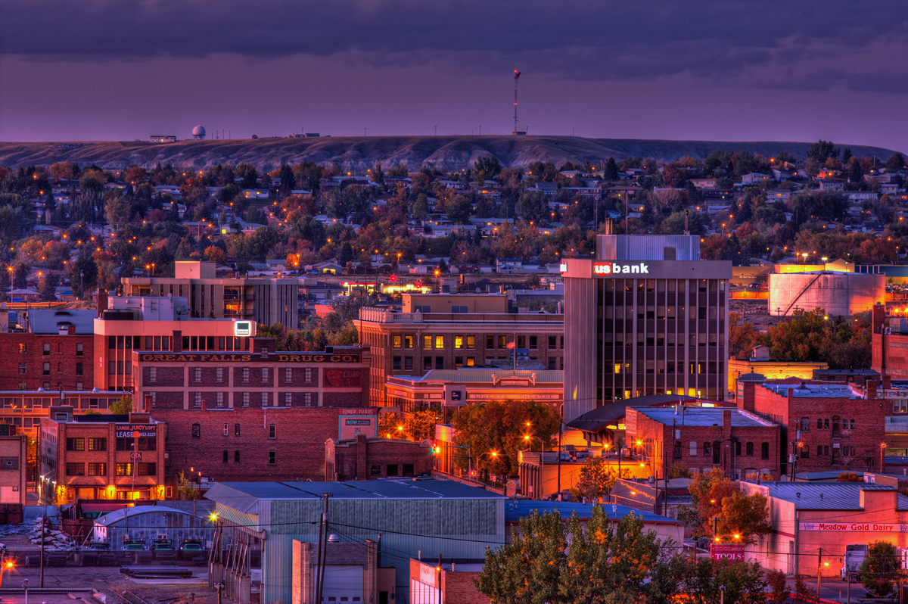

Welcome to Great Falls - The Electric City
Great Falls is Montana's third most populous city located in central Montana and was founded in 1888. It is named after five water falls located on the Missouri River to east of the city. Great Falls was the brain child of Paris Gibson a sheep man who resided in Fort Benton. Upon visiting the Great Falls he reveled in the possibilities for building an large industrial city power by hydroelectricity from the five water falls.
